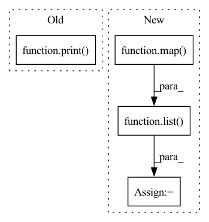

Pattern ID :19016
Before Change
start_time = time.time()
best_img = search_unsplash(extract, self._photo_features, self._photo_ids, self._clip, self._device, num_images, current_images_ids)
print( f"Images Time : {round((time.time() - start_time), 4)}s \n")
return best_img
// return retrieve_images_for_one_extract(
// extract, num_images, self._captions_embedding, self._lsa_embedder, self._caption_image_df, self._nlp, current_images_ids)
After Change
chosen_style_model = _model_from_style(chosen_style)
if chosen_style_model is not None:
// Return a tuple per image (img_id, PIL_IMAGE)
ids_pil_images = list(
map( lambda img_id: (img_id, _get_image(img_id), best_imgs_ids)))
styled_ids_imgs = list(map(lambda id_pil_img: (id_pil_img[0], _image_style_transfer(
id_pil_img[1], chosen_style_model, self._device)), ids_pil_images))
// Save styled images
print("Styled Image path: ", os.path.join(In pattern: SUPERPATTERN
Frequency: 3
Non-data size: 4
Instances Fragment ID: 61821855
Project Name: edenbd/multimodalstory-demo
Commit Name: f3e3e353a54333128b33c72020663ce061050366
Time: 2021-04-01
Author: edenoosh15@gmail.com
File Name: backend/story_generator/pipeline.py
M Class Name: Pipeline
N Class Name: Pipeline
M Method Name: retrieve_images(5)
N Method Name: retrieve_images(4)
M Parent Class:
N Parent Class:
M File Name: backend/story_generator/pipeline.py
N File Name: backend/story_generator/pipeline.py
M Start Line: 74
M End Line: 76
N Start Line: 69
N End Line: 100
Before Change
lambda a: (len(a.diagram), a.dimension), chain.from_iterable(x)
))
print( list(M))
N = max(M, key=itemgetter(0))[0]
D = max(M, key=itemgetter(1))[1]
After Change
// Pad all tensors to length N in the first dimension, then turn
// them into a batch.
result = torch.stack(
list(
map(
lambda t: torch.nn.functional.pad(
t,
(0, 0, N - len(t), 0),
mode="constant",
value=torch.nan),
tensors
)
)
)
return result
Fragment ID: 61821851
Project Name: aidos-lab/pytorch-topological
Commit Name: 18dc9da2891a86559ed9412dcdd51accd6536049
Time: 2022-01-05
Author: bastian@rieck.me
File Name: torch_topological/nn/data.py
M Class Name: AnonimousClass
N Class Name: AnonimousClass
M Method Name: make_tensor(1)
N Method Name: make_tensor(1)
M Parent Class:
N Parent Class:
M File Name: torch_topological/nn/data.py
N File Name: torch_topological/nn/data.py
M Start Line: 52
M End Line: 69
N Start Line: 58
N End Line: 92
Before Change
image_paths.append(os.path.join("/data",line[0]))
else:
break
print( image_paths)
self.__file_list = image_paths
if __name__ == "__main__":After Change
for line in lines:
line = line.rstrip().split()
if len(line)>1:
image_paths[os.path.join("/data",line[0])] = np.array([list( map( int,i.split(","))) for i in line[1:]])
else:
break
//////////////////////////////////////////////////////////////////////// Fragment ID: 61821850
Project Name: jingtianyilong/yolov4-pytorch
Commit Name: 47671101d0e0abe291ba461ec21f9a755a3fa8da
Time: 2021-01-25
Author: zijie.guo@daimler.com
File Name: visualize_demo.py
M Class Name: Detection
N Class Name: Detection
M Method Name: get_first_10_imgs(1)
N Method Name: get_first_10_imgs(1)
M Parent Class: object
N Parent Class: object
M File Name: visualize_demo.py
N File Name: visualize_demo.py
M Start Line: 63
M End Line: 72
N Start Line: 67
N End Line: 91